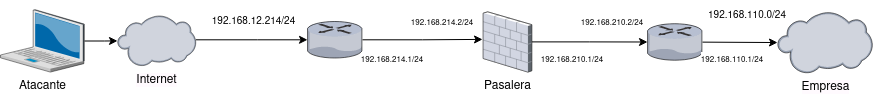

Diagrama de red

Router Cisco 1841

Se trata de un sistema de pasarelas que contendrá una red interna donde se encontraran clientes entre otras cosas. Entre las pasarelas también se encontrarán sistemas de seguridad para proteger la red interna, y cosas como el servidor web en el que se encontrará parte de la documentación. Por otra parte estará el atacante que se tratara de un/a portátil/raspberry pi que dispondrá de varios scripts para realizar los ataques que nos interesan para realizar el proyecto, también se encontrará un servidor web donde buscamos poder realizar los ataques de manera gráfica desde una aplicación web.
Con este proyecto lo que nos hemos planteado como objetivos es lograr realizar una red con routers Cisco profesionales que sea pequeña pero funcional, y ver como reacciona esta pequeña red ante algunos ataques basicos que se podrian realizar desde el exterior y el interior de la red.